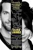

Micro Movie Reviews
Micro Movie Reviews
DRAMAS
Maria Full of Grace (2004) | Rated: R
In a small Colombian village, a pregnant seventeen year-old named Maria (Catalina Sandino Moreno) helps to support her family by working as a floriculturist. Unfortunately, Maria is fired, and with a total lack of support or the confidence to find a new job, she decides to accepts a job as a drug mule. Her new employment requires her to fly to the USA with packets of cocaine in her stomach. Upon arriving in New York, things do not go as planned. Maria must improvise and make the best decision for her drug bosses, herself and her unborn baby. For her portrayal of Maria, Catalina Sandino Moreno was a nominee for the 2004 Academy Award for Best Actress. Ms. Moreno is a native of Bogata, Colombia.
Stars: Catalina Sandino Moreno, Guilied Lopez, Orlando Tobón
Writers: Joshua Marston
Director: Joshua Marston
Genre: Drama

Silver Linings Playbook (2012) | Rated: R
A former teacher, Pat Solatano (Bradley Cooper) has lost everything (job, house and wife). Pat finds himself residing at his parents' house while trying to get his life back-on-track. He spent eight months in a state mental institution due to a plea bargain. Pat's main goal is to reconcile with his wife and get on with life. His parents (Robert De Niro, Jacki Weaver) wants him to get his life back on track and participate in the family's obsession with "All Things" associated with the Philadelphia Eagles football team.
Then, Pat meets Tiffany (Jennifer Lawrence), a girl with a mysterious background and plenty of her own problems. She's a young widow with employment and fidelity issues. Tiffany offers to assist Pat with reconciling with his wife, but he must do something for her. As Pat works to keep his end of the bargain with Tiffany, they are drawn closer together; silver linings appear in both of their lives. For her portrayal of Tiffany, Jennifer Lawrence won the 2013 Academy Award for Best Actress.
Stars: Bradley Cooper, Jennifer Lawrence, Robert De Niro
Writers: K David O. Russell (screenplay), Matthew Quick (novel)
Director: David O. Russell
Genre: Drama